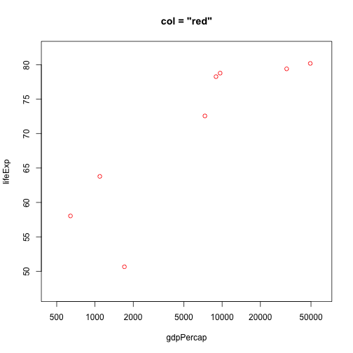

데이터 과학
웹스크래핑(Web Scraping)
학습 목표
- 웹에서 데이터 추출을 위한 기본 API와 HTTP 개념을 이해한다.
- 웹사이트에서 통계분석과 모형개발에 필요한 데이터를 가져온다.
- 웹 페이지에서 데이터를 추출한다.
1. API와 HTTP 1 2
웹에서 데이터 추출을 위한 기본 API와 HTTP 개념을 이해하는 것이 필요하다. 정보를 전달하기 위해서 국제표준화기구(OSI)에서 제시한 OSI 모형 (Open Systems Interconnection Reference Model)3을 사용하고, 이를 기반으로 응용 프로그램을 웹서비스와 데이터 형식에 과거 SOAP와 XML 조합을 많이 사용했다면, 최근에는 RESTful API와 JSON 조합을 주로 사용한다. 웹에서 정보를 얻기 위해서는 서버 API에서 정보를 제공하는 형식에 맞춰 정보를 전달하기만 하면 서버가 제공하는 정보를 받을 수 있고, 이를 이후 데이터과학 작업을 위해 데이터 처리작업을 수행하면 된다.

1.1. HTTP와 URL
HTTP(HyperText Transfer Protocol, 초본문전송규약, 하이퍼본문전송규약)는 WWW 웹상에서 정보를 주고받을 수 있는 프로토콜로 TCP와 UDP를 사용하며, 80번 포트를 통해 주로 HTML 문서를 주고받는다. 1996년 버전 1.0, 그리고 1999년 1.1 규격이 각각 발표되었다.
URL(Uniform Resource Locator, 파일식별자, 유일자원지시기)은 네트워크 상에서 자원(resource)이 어디 있는지를 알려주기 위한 규약으로 웹 사이트 주소뿐만 아니라 컴퓨터 네트워크상의 자원을 모두 나타낼 수 있다.
URL을 통해 컴퓨터 네트워크상의 자원을 프로토콜 → 호스트명 → 포트명 → 경로명 → 쿼리 매개변수 → (Fragment)ID 표현한다.
http://www.hostname.com:80/path/to/resource?a=1&b=2#id
------ ---------------- -- ---------------- ------- --
ㄴ프로토콜 | | | | ㄴ(Fragment)ID
ㄴ호스트명 | | |
ㄴ포트 | |
ㄴ경로명 |
ㄴ쿼리 매개변수1.2. HTTP 메시지 구조
request, response 요청이냐 응답이냐가 HTTP 메시지 구조의 첫줄이 되고 그다음에 헤더에 키:값 내용이 쭉 나열되고 나서, 공백이 메시지 본문과 구별하기 위해 끼워들게 되는 구조를 갖는다.
| 요청 혹은 응답 | GET /resources/webinars/ HTTP/1.1 |
|---|---|
| Host: www.rstudio.com | |
| User-Agent: libcurl/7.43.0 r-curl/2.1 httr/1.2.1 | |
| Accept-Encoding: gzip, deflate | |
| Accept: application/json, text/xml, application/xml, / | |
| 공백 | |
| 메시지 본몬 |
첫줄에 HTTP 동사가 나오고 URL 경로명, HTTP 버젼이 나열된다.
GET /resources/webinars/ HTTP/1.1
--- ------------------- ----------
ㄴHTTP동사 | |
ㄴURL경로명 |
ㄴ HTTP 버젼HTTP 동사(Verbs) {.callout}
GET: (Retrieve), URL에서 정보를 가져온다.POST: (Create), URL에 리소스(resource)를 생성한다.PUT: (Update), URL의 리소스(resource)를 갱신한다.DELETE: (Delete), URL의 리소스(resource)를 삭제한다.
1.3. JSON 자료형
웹 API를 통해 데이터를 불러오는 경우 데이터에 대한 일종의 약속이 필요한데 JSON 자료형이 공통된 약속으로 웹사이트에 자료를 요청하게 되면 반환되는 자료형이다.
# library(jsonlite)
toJSON(list(a = 1, b = 2, c = 3)){"a":[1],"b":[2],"c":[3]}
fromJSON('{"a":[1],"b":[2],"c":[3]}') $a
[1] 1
$b
[1] 2
$c
[1] 3
2. httr 팩키지
httr 팩키지를 불러오고 나서 GET 명령어를 통해 웹페이지를 불러온다. verbose() 인자를 넣어 웹사이트에서 데이터를 불러오는 과정을 자세히 살펴볼 수 있다.
library(httr)
r <- GET("http://httpbin.org/get", verbose())
rResponse [http://httpbin.org/get]
Date: 2016-11-19 15:06
Status: 200
Content-Type: application/json
Size: 298 B
No encoding supplied: defaulting to UTF-8.
{
"args": {},
"headers": {
"Accept": "application/json, text/xml, application/xml, */*",
"Accept-Encoding": "gzip, deflate",
"Host": "httpbin.org",
"User-Agent": "libcurl/7.43.0 r-curl/2.1 httr/1.1.0"
},
"origin": "222.98.240.115",
"url": "http://httpbin.org/get"
...
웹API를 통해 데이터를 요청하게 되면 다음과 같은 응답을 얻게 된다.
| 응답 | HTTP/1.1 200 OK |
|---|---|
| Server: nginx | |
| Date: Wed, 09 Nov 2016 14:14:47 GMT | |
| Content-Type: application/json | |
| 공백 | |
| 메시지 본몬 |
서버에서 응답결과를 첫줄에 웹서비스를 요청한 클라이언트에 전달하는데 HTTP/1.1 200 OK와 같이 먼저 HTTP버젼을 전달하고, 상태코드, 그리고 상태코드를 영어로 설명한 정보가 전달된다.
HTTP/1.1 200 OK
--------- ---------- ---
ㄴHTTP버젼 | |
ㄴ상태코드 |
ㄴ 상태코드 영어 설명 2.1. 상태코드(status code)
상태코드(status code)에 대한 자세한 설명은 HTTP Status Cats API에서 재미지게 확인이 가능하다. 웹 API를 통해 자료를 요청한 후에 가장 먼저 해야할 작업을 요청결과를 확인하는 작업이다. 이를 위해 $status_code 혹은 http_status() 함수를 통해 상태코드를 확인한다.
r$status_code[1] 200
http_status(r) $category
[1] "Success"
$reason
[1] "OK"
$message
[1] "Success: (200) OK"
방어적 프로그래밍(defensive programming)을 위해 warn_for_status(), stop_for_status() 함수를 활용한다.
2.2. 헤더(headers)
headers() 함수를 통해 헤더 정보를 추출한다.
headers(r)$server
[1] "nginx"
$date
[1] "Sat, 19 Nov 2016 15:06:10 GMT"
$`content-type`
[1] "application/json"
$`content-length`
[1] "298"
$connection
[1] "keep-alive"
$`access-control-allow-origin`
[1] "*"
$`access-control-allow-credentials`
[1] "true"
attr(,"class")
[1] "insensitive" "list"
headers(r)$server [1] "nginx"
2.3. 본문 내용(contents)
웹API를 통해 요청하는 이유는 본문 내용(contents)를 입수하기 위해서다. 이를 위해 $content, content() 함수를 사용한다. 본문내용 추출은 “raw”, “text”, “parse” 세가지 방식을 지원한다.
content(r, "raw") [1] 7b 0a 20 20 22 61 72 67 73 22 3a 20 7b 7d 2c 20 0a 20 20 22 68 65 61
[24] 64 65 72 73 22 3a 20 7b 0a 20 20 20 20 22 41 63 63 65 70 74 22 3a 20
[47] 22 61 70 70 6c 69 63 61 74 69 6f 6e 2f 6a 73 6f 6e 2c 20 74 65 78 74
[70] 2f 78 6d 6c 2c 20 61 70 70 6c 69 63 61 74 69 6f 6e 2f 78 6d 6c 2c 20
[93] 2a 2f 2a 22 2c 20 0a 20 20 20 20 22 41 63 63 65 70 74 2d 45 6e 63 6f
[116] 64 69 6e 67 22 3a 20 22 67 7a 69 70 2c 20 64 65 66 6c 61 74 65 22 2c
[139] 20 0a 20 20 20 20 22 48 6f 73 74 22 3a 20 22 68 74 74 70 62 69 6e 2e
[162] 6f 72 67 22 2c 20 0a 20 20 20 20 22 55 73 65 72 2d 41 67 65 6e 74 22
[185] 3a 20 22 6c 69 62 63 75 72 6c 2f 37 2e 34 33 2e 30 20 72 2d 63 75 72
[208] 6c 2f 32 2e 31 20 68 74 74 72 2f 31 2e 31 2e 30 22 0a 20 20 7d 2c 20
[231] 0a 20 20 22 6f 72 69 67 69 6e 22 3a 20 22 32 32 32 2e 39 38 2e 32 34
[254] 30 2e 31 31 35 22 2c 20 0a 20 20 22 75 72 6c 22 3a 20 22 68 74 74 70
[277] 3a 2f 2f 68 74 74 70 62 69 6e 2e 6f 72 67 2f 67 65 74 22 0a 7d 0a
content(r, "text") No encoding supplied: defaulting to UTF-8.
[1] "{\n \"args\": {}, \n \"headers\": {\n \"Accept\": \"application/json, text/xml, application/xml, */*\", \n \"Accept-Encoding\": \"gzip, deflate\", \n \"Host\": \"httpbin.org\", \n \"User-Agent\": \"libcurl/7.43.0 r-curl/2.1 httr/1.1.0\"\n }, \n \"origin\": \"222.98.240.115\", \n \"url\": \"http://httpbin.org/get\"\n}\n"
content(r, "parse", type = "application/json")$args
named list()
$headers
$headers$Accept
[1] "application/json, text/xml, application/xml, */*"
$headers$`Accept-Encoding`
[1] "gzip, deflate"
$headers$Host
[1] "httpbin.org"
$headers$`User-Agent`
[1] "libcurl/7.43.0 r-curl/2.1 httr/1.1.0"
$origin
[1] "222.98.240.115"
$url
[1] "http://httpbin.org/get"
3. 위키데이터 추출 및 시각화 4 5
3.1. 웹 스크래핑
마음에 드는 웹페이지에서 데이터를 발견했을 때, 데이터를 복사하여 붙여넣기 신공을 하지 않고, 데이터를 깔끔하게 뽑아내는 방법을 살펴본다. 먼저, 마음에 드는 웹페이지를 방문하고 나서, 웹브라우져(크롬 기준)에서 마우스 우클릭으로 검사 를 클릭한다. 그리고 나서 해당 데이터가 보관되어 있는 위치로 이동한다. (여기서는 20대 총선 정당별 지지율 추이표) 해당하는 곳에 마우스를 올리거나, 검사창 에서 해당 <table> 태그를 찾아 마우스 우클릭하고 Copy 메뉴의 Copy XPath 를 클릭해서 XPath를 복사하고 나서 다음 R 스크립트에 복사해서 붙여넣는다.
제 20 대 총선 위키페이지 url은 다음과 같다.
- url : https://ko.wikipedia.org/wiki/대한민국_제20대_국회의원_선거
- XPath: //*[@id="mw-content-text"]/table[4]
# library(rvest)
# library(dplyr)
# library(httr)
# library(rvest)
# Sys.setlocale("LC_ALL", "English")
url <- "https://ko.wikipedia.org/wiki/대한민국_제20대_국회의원_선거"
poll <- url %>%
read_html() %>%
html_nodes(xpath='//*[@id="mw-content-text"]/table[4]') %>%
html_table(fill = TRUE) %>%
.[[1]]
head(poll)FALSE 기관 날짜 새누리당 더불어민주당 국민의당 정의당
FALSE 1 한국리서치[23] 2016년 2월 25일 31.3 % 10.6 % 4.9 % 1.4 %
FALSE 2 리얼미터[24] 42.0 % 26.4 % 12.0 % 5.9 % 13.7 %
FALSE 3 한국갤럽[25] 2016년 2월 26일 42.0 % 19.0 % 8.0 % 3.0 %
FALSE 4 리얼미터[26] 2016년 2월 29일 43.5 % 26.7 % 12.1 % 4.7 %
FALSE 5 알앤써치[27] 2016년 3월 2일 37.5 % 24.5 % 8.9 % 5.3 %
FALSE 6 리얼미터[28] 2016년 3월 3일 45.0 % 28.1 % 11.0 % 4.4 %
FALSE 기타·무응답
FALSE 1 51.8 %
FALSE 2 <NA>
FALSE 3 28.0 %
FALSE 4 13.0 %
FALSE 5 23.8 %
FALSE 6 11.5 %
3.2. 데이터 전처리
위키피디아 사이트에서 가져온 데이터는 텍스트형이라서 통계분석을 위해 데이터를 전처리한다. 우선 정당 지지도를 숫자형으로 변환한다. 정규표현식을 사용해서 숫자 혹은 .이 아닌 것은 제거하고 남은 것을 숫자로 변환한다. 조사기관에 대해서도 출처 정보 [숫자]가 들어간 것을 제거한다. 마지막으로 2016년 3월 15일처럼된 날짜정보를 R에서 인식할 수 있는 자료형으로 변환한다. 먼저 숫자가 아닌 것을 제거하고 나서 이를 tidyr 팩키지의 separate(), unite() 함수로 정제한다.
# 데이터 전처리-------------------------------
# 지지율 숫자변환
poll$새누리당 <- as.numeric(gsub("[^0-9.]", "", poll$새누리당))
poll$더불어민주당 <- as.numeric(gsub("[^0-9.]", "", poll$더불어민주당))
poll$국민의당 <- as.numeric(gsub("[^0-9.]", "", poll$국민의당))
poll$정의당 <- as.numeric(gsub("[^0-9.]", "", poll$정의당))
poll$`기타·무응답` <- as.numeric(gsub("[^0-9.]", "", poll$`기타·무응답`))
# 조사기관 변환
poll$기관 <- gsub("\\[.*\\]", "", poll$기관)
# 날짜 변환
poll <- poll %>% separate(날짜, into=c("year", "month", "day"), sep="[^[:alnum:]]+", remove = TRUE) %>%
mutate(year = gsub("[^0-9]", "", year),
month = gsub("[^0-9]", "", month),
day = gsub("[^0-9]", "", day)) %>%
unite(date, year, month, day, sep="-")마지막으로 wide형 데이터를 시각화가 가능한 long형 데이터로 변환시킨다.
# 데이터 전처리
poll_long <- poll %>% gather(정당, 지지율, 새누리당:`기타·무응답`) %>%
mutate(정당 = factor(정당, levels=c("새누리당", "더불어민주당", "국민의당", "정의당", "기타·무응답")))
# 시각화
ggplot(data = poll_long, aes(y = 지지율, x = date, col = 정당, group=정당)) +
geom_point(alpha = 0.5) +
geom_smooth(span = 0.5, se=FALSE) +
labs(title="제20대 총선") +
theme_grey(base_family='NanumGothic') +
theme(axis.text.x = element_text(angle = 90, hjust = 1))